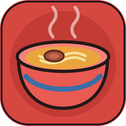

需要協助嗎？先看看下面的常見問題，找不到答案再來信。
站在料理台後，從下方的湯鍋舀一勺湯、從麵鍋撈起麵線、再灑上訂單要求的配料（牛肉 / 蔥花 / 香菜 / 辣椒）。湯、麵、牛肉齊全且配料與訂單一致，就會浮出「完成」。
撈麵的時機決定火候——剛剛好三星，太生或過頭兩星。這是整局唯一的手感技巧點。
配料一旦灑進碗裡就拿不掉。若灑了訂單不要的配料，畫面會浮出「倒掉」，把這碗倒掉重做即可。湯 / 麵 / 牛肉沒放則可以補救，不算錯。
不需要。本遊戲是純單機、離線小品，沒有註冊 / 登入。你的累計完成數與店面擺設只儲存在裝置本機。
在菜單頁連續點擊櫃台上的「充電寶租借機」七下，會彈出確認框，可重置本機資料（完成數與擺放位置）。
可以。牆上的版本貼紙與小花都能拿起、拖到任意處放下，位置會永久存檔；重置資料時會回到初始位置。